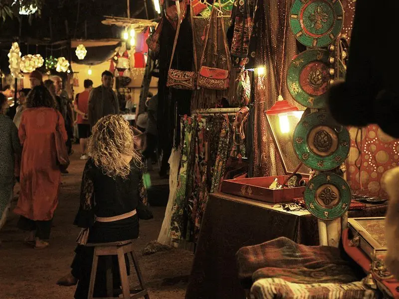
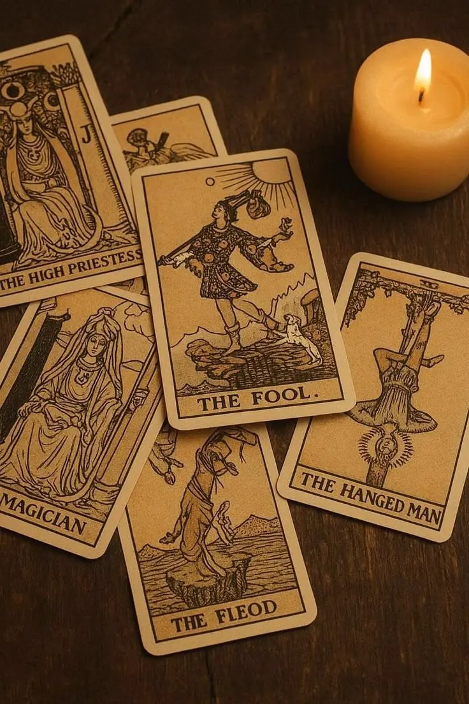
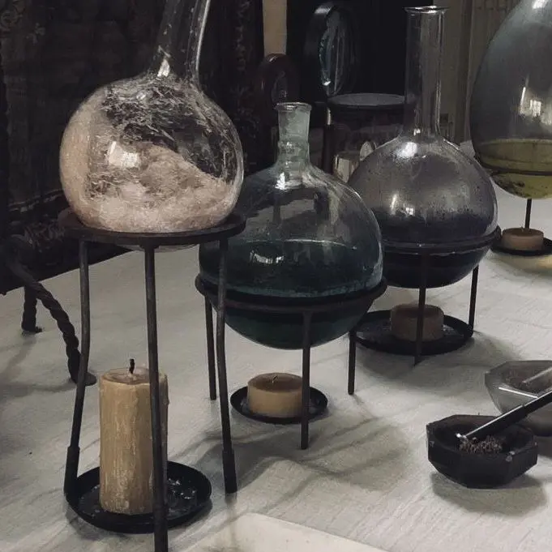
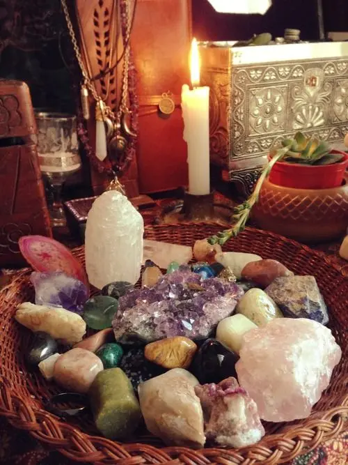
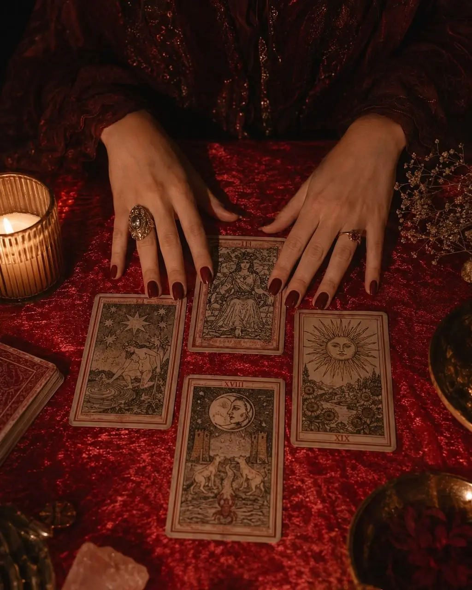
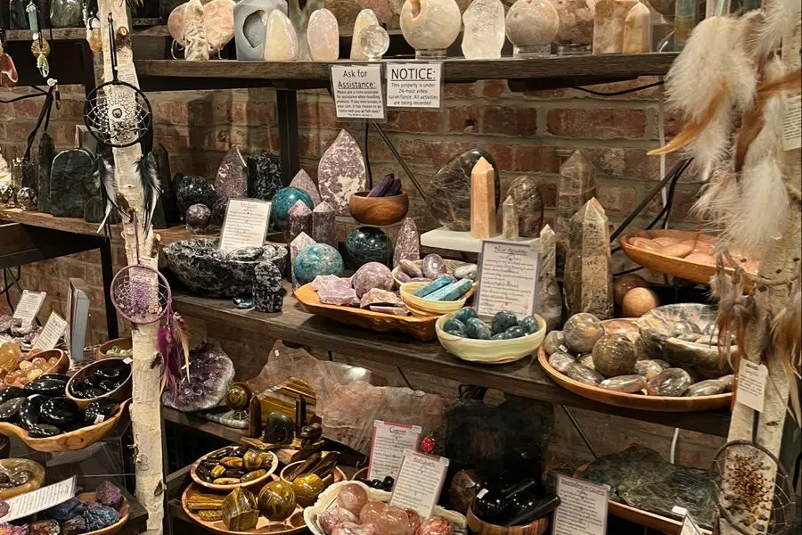
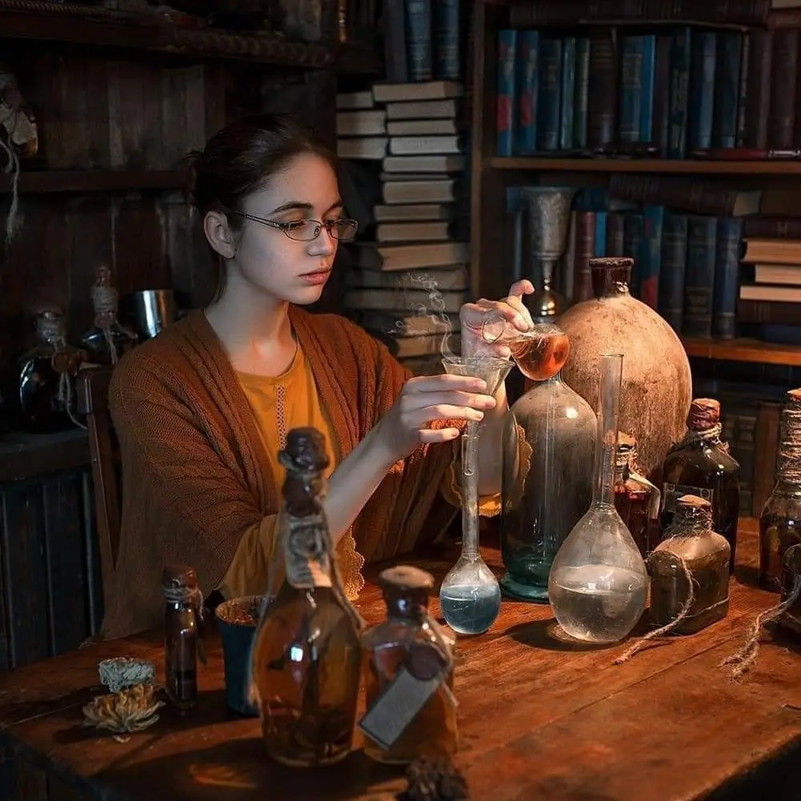

Et samlingssted for nysgerrige sjæle
Træd ind i et univers fyldt med inspiration, traditioner og nye perspektiver. Magic Days samler mennesker med interesse for naturens mystik, spiritualitet og gamle håndværk.
Uanset om du allerede kender til den spirituelle verden eller blot er nysgerrig på at udforske noget nyt, er der plads til dig. Kom som du er, mød ligesindede, og vær med til en dag fyldt med nærvær, inspiration og fællesskab.


Tarot readings
Er du nysgerrig på, hvad kortene kan fortælle? Træd ind i tarotkortenes verden, og oplev en anderledes måde at udforske dine tanker og muligheder på.

Potions Workshop
Dyk ned i naturens gamle traditioner, og bliv inspireret af urter, planter og naturlige ingredienser. Måske finder du inspiration til din egen lille urtehylde?

Crystals shop
Fra glitrende ametyst til smuk rosenkvarts – sten og krystaller har fascineret mennesker i århundreder. Kom og udforsk deres historier, symbolik og betydning.

tarot
Få en personlig tarotlæsning, hvor kortenes symboler og betydninger danner udgangspunkt for en samtale om dig, dine tanker og de spørgsmål, du måske går rundt med. Uanset om du er ny til tarot eller allerede kender kortene, er du velkommen til at være med. Kom med et åbent sind, og lad kortene inspirere dig til nye perspektiver.

Krystallernes univers
Hvad er det egentlig, der gør krystaller så fascinerende? Kom med på en introduktion til forskellige sten og krystaller, deres oprindelse, historie og betydning i spirituelle traditioner.

Naturens lille apotek
Lær om forskellige urter og deres traditionelle anvendelser i naturmedicin. Vi udforsker blandt andet planter, blomster og naturlige ingredienser, som gennem generationer har været brugt i hjemmelavede remedier.